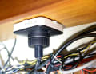
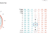
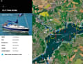

Understanding the instruments, the data and the sea beneath both.
A modern yacht's instrument network is invisible to the eye but omnipresent in its influence. Buried inside mast conduits, under cabin soles and behind instrument panels runs the NMEA 2000 backbone — a robust, daisy-chained communications bus that carries every sensor's output to every display simultaneously. Depth sounder, wind transducer, engine monitoring, GPS, autopilot compass and AIS transponder all speak the same digital language on this shared wire.
The Orca Core joins this network as a native NMEA 2000 device. Once connected to the backbone's T-connector, it immediately begins broadcasting its own high-accuracy GNSS position, heading and IMU data to all other networked devices, while simultaneously consuming depth, wind, speed and engine data from the instruments already aboard. The CoPilot app on the tablet becomes a window onto the entire network — not merely a chart plotter, but a comprehensive instrument display.
For vessels with older NMEA 0183 equipment — the single-talker, multiple-listener serial protocol that preceded NMEA 2000 — the Core includes a 0183 adapter. Even legacy instruments from the 1990s can contribute their data streams to the modern Orca ecosystem, preserving the value of existing hardware while adding contemporary intelligence. Signal K, the open-source vessel data format increasingly adopted by the marine tech community, is also supported, opening the system to the wider universe of open-source instrumentation.


A polar diagram is a vessel's fingerprint — a plot of theoretical boat speed at every combination of true wind angle and true wind speed. The values are plotted in a polar coordinate system: the upwind apex shows the maximum VMG close-hauled in a 10-knot breeze; the downwind region reveals the optimal gybe angle for running in 20 knots. Where your actual boat speed matches the polar, you are sailing efficiently. Where it falls short, something — sail trim, bottom fouling, rig tension — is bleeding performance.
Orca maintains a database of over 7,000 polar diagrams sourced from the ORC (Offshore Racing Congress) measurement system, the global authority on yacht performance measurement. For most production vessels and many custom designs, a matching polar is available and loads automatically when you enter your boat's name during setup. For unique or unmeasured vessels, the values can be manually calibrated — adjusted empirically from observed boat speed versus the polar prediction — bringing the routing engine into alignment with the actual boat rather than the theoretical twin.
When the weather routing algorithm calculates an optimum passage, it queries the polar at every grid point of the weather forecast, choosing the course and sail plan that maximises progress toward the destination. The difference between a voyage planned with polar data and one planned without it can be measured in hours on a 200-mile offshore passage — and in significant fuel savings on a motoring leg.
Beneath every chart lies a fourth dimension invisible to the eye: the ceaseless motion of water driven by the gravitational pull of the Moon and, to a lesser degree, the Sun. Tidal streams can exceed four knots through narrow straits — more than many cruising yachts can make to windward under engine. The navigator who ignores them pays in hours; the one who exploits them arrives in comfort.
Orca's tidal display shows predicted tidal stream vectors overlaid on the chart as animated arrows, their lengths scaling with speed and their directions rotating as the tide turns. A single glance reveals whether the flood is setting you toward the shoal to the north or carrying you effortlessly through the sound toward your anchorage. The navigator can advance the time slider to preview the stream at any stage of the passage — confirming that the tidal gate opens favourably three hours after planned departure and allowing the crew that extra hour of sleep.
In shallow-water cruising grounds — the Wadden Sea, the Thames Estuary, the Bay of Fundy — tidal height determines whether a route exists at all. Orca cross-references the safety depth you set against the predicted tidal height at each point along the route, flagging segments that will be too shallow at your projected time of transit. Passages that appear viable at high water become dangerous at half-tide — Orca shows both realities simultaneously.
Where tides funnel traffic through narrow straits, the International Regulations for Preventing Collisions at Sea (COLREGS) govern every vessel. Traffic Separation Schemes — wide lanes that route large vessels away from coastal shipping hazards — are charted on Orca's display as shaded corridors. The crossing rules (Rule 10) that govern a sailing vessel crossing a TSS are among the most critical pieces of regulatory knowledge an offshore sailor can possess: failure to observe them places you in the path of vessels that, by their size and speed, cannot manoeuvre quickly enough to avoid collision.
The AIS layer on Orca makes these dynamics concrete: watch the cargo ships maintaining their lane with machinelike regularity, observe the CPA calculation updating as the range closes, and appreciate why the regulations were written before ever invoking your rights as a sailing vessel. In the domain of the sea, wisdom and courtesy outlast right-of-way every time.
The Automatic Identification System broadcasts each vessel's identity, position, speed, course, type and destination on VHF frequencies 161.975 and 162.025 MHz — a continuous digital shout into the ether that every AIS receiver within 20–40 nautical miles can hear. Introduced in the early 2000s as a collision avoidance tool for large commercial vessels, AIS has since become indispensable aboard recreational yachts, transforming the darkened ocean from a mystery into a readable map of moving traffic.
Orca integrates AIS at two levels: onboard receiver data from a hardware unit plugged into the NMEA 2000 network (Class B transponder recommended for yachts — it both receives and transmits, making your vessel visible to commercial shipping), and internet-sourced AIS from MarineTraffic when cellular data is available. The internet supplement fills the gap beyond VHF horizon — revealing tankers 30 miles ahead that your VHF antenna cannot yet hear — and provides a situational overview while still in harbour planning the offshore departure.

When a compatible marine radar is networked to the Orca system, the radar returns can be overlaid directly onto the chart display — aligning the radar picture with the charted geography of coastlines, hazards and sea marks. A bright echo at bearing 045°, range 3.2 miles becomes identifiable as the ferry terminal on the chart; the return from an unlighted fishing vessel resolves itself against the chart context as the uncharted hazard it truly is. The fusion of radar picture and vector chart is among the most powerful situational awareness tools available aboard a yacht.
This integration — app, GNSS, instruments, AIS, autopilot and radar, all visible through a single waterproof tablet screen — represents the full promise of the Orca system: not a collection of devices but a unified intelligence, born of Norwegian engineering, that speaks to the sailor in a language both ancient and new.